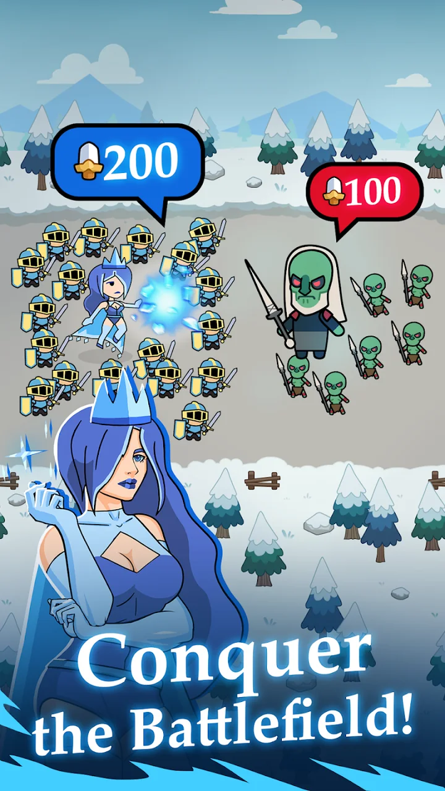
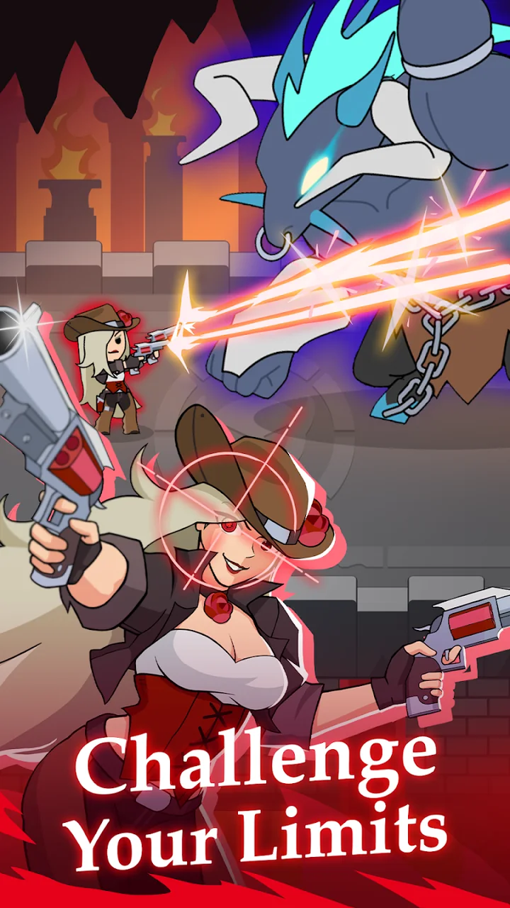

Legion Attack!
A mobile army-building combat game I worked on at Century Games, and one of the stronger retention performers among the mobile projects I worked on.
- Role
- Game Designer, Century Games
- My responsibility
- Stage progression economy and combatant stats
- Project outcome
- Strong relative retention among projects I worked on
Game overview




Official Google Play promotional images, supplied by the portfolio owner. Current store imagery; not a claim that every depicted feature was part of the versions I worked on.
Project references
My contribution
I was responsible for the main stage progression economy, including stage, dungeon and boss drops. I also balanced the stats of player troops and heroes, enemies and bosses.
The balancing problem: troop growth doubles
Troops gain twice their stats at each growth step. That makes troop strength exponential across upgrades, while enemies need to be paced against the rough progression of a player through stages. A change to the expected troop upgrade timing can make a stage too easy or too difficult.
The design decision
We kept the exponential troop growth and used a linear enemy growth curve, tuning its per-stage increase aggressively to match the expected pace of troop progression.
Troop progression
Double stats at each troop growth step. Preserve the existing exponential progression.
Enemy progression
Use a constant stat increase per stage. Tune the slope against expected player progression.
The two curves use different progression axes: troop upgrade steps versus stage number. A linear curve does not track exponential growth indefinitely, so the tuning depends on the expected progression range and upgrade frequency.
Why upgrade timing matters
■ Troop strength after upgrades ■ Enemy growth
Estimating player strength across stages
In the earlier versions, we used spreadsheets and charts to estimate player progression. As AI-assisted development became more capable, we transitioned to a player bot generator that used our economy model to estimate the strength a player could reach at a given stage.
We could give the generated player more or fewer resources to account for variation in random outcomes. This helped us inspect a range of plausible player strengths rather than balance against a single assumed progression path.
Economy to player strength
Use the expected stage economy to estimate player troop progression and generate a representative player profile.
Account for RNG
Adjust the resource assumptions up or down to examine stronger and weaker progression scenarios before tuning the enemy curve.
The generator made it much easier to estimate player strength and tune progression across stages. It was a balancing aid, not a guarantee of actual player behavior or a replacement for gameplay validation.
From model to balancing decision
My production responsibility was the stage economy and combatant stats. The generator was a team workflow improvement used to support that balancing work; this case does not claim sole authorship of the generator.
I worked on both versions shown in the public gameplay recordings. This case describes my balancing responsibilities and approach; no production values or causal effect on retention are claimed.
Related public balancing example
The independent workspace below illustrates a related economy-to-combat pacing problem. It does not reproduce Legion Attack!’s troop doubling or enemy curve.
In the fictional workspace, increasing upgrade-cost inflation from 12% to 20% pushes the first clear-time warning to stage 55. At stage 60, the estimate rises from 12.7 to 15.4 seconds against the same enemy curve.
What to compare
Keep encounter targets fixed. Compare available upgrades, unit strength and estimated clear time against the baseline.
What to validate next
Inspect the first flagged stage, test the effect of income and roster changes, then check whether the model assumptions match actual gameplay in a real project.
Try the public balancing example
This example demonstrates an analytical method, not the cause of Legion Attack!'s retention performance.